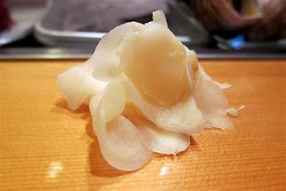

Gari

Ingredients
Switch to Steps
-
8 oz Ginger
-
1 cup Rice Wine Vinegar
-
1 1/2 tsp Salt
-
1/3 cup Sugar
Steps
Switch to Ingredients
-
Scrape off the ginger peel by running the edge of an upside-down spoon across the surface.
-
Slice each root as thinly as possible with razor-sharp knife.
-
Place the slices in a medium-sized bowl.
-
When you have cut up about half of the ginger, toss in half of the salt and massage gently with your hands to distribute.
-
Let sit for an hour or so and continue cutting the second half of the ginger,
following the sme steps as for the first half.
(salting the first half while you cut the second half helps avoid discoloration)
-
After the firts half of the ginger has rested in the salt for an hour,
lift the slices out from any accumulated liquid and lay out flat
on half of a clean kitchen towel, taking care not to break the shapes.
Fold the other half of the towel on top of the ginger and press gently
to wick out any lingering salt water.
-
Repeat this step with the second half of the ginger.
Leave the second half in the towel for 10 minutes,
then drop all of the ginger slices into a medium-siced bowl.
-
Heat the vinegar and sugar in a small saucepan pver medium-high heat,
stirring occasionally, until the sugar has dissolved
and the mixture has reached a slow boil.
-
Remove from the heat and immediately pour over the squeezed, salted ginger slices..
-
Let the vinegared ginger cool naturally before pouring into a clean jar
and storing in the refrigerator for several months or more.